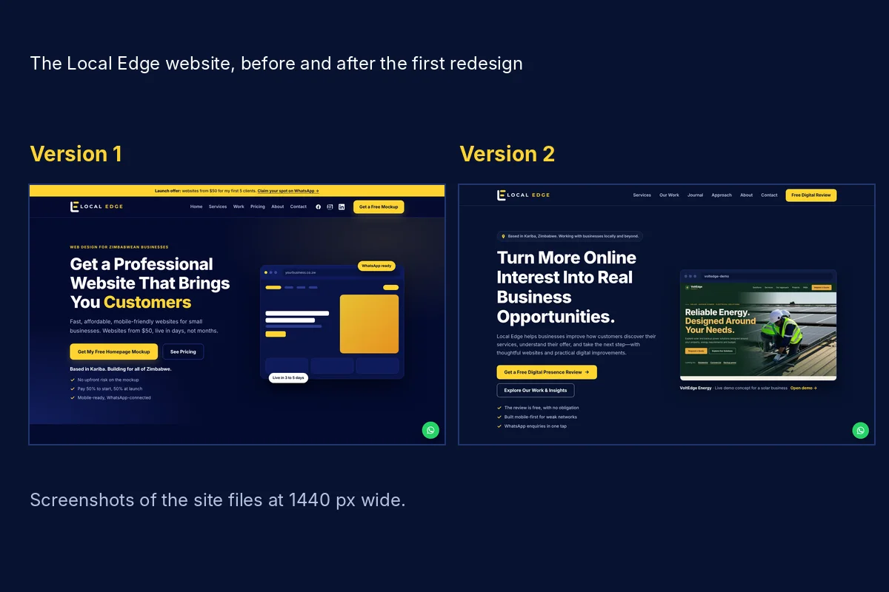

Home / Journey
The Local Edge journey
Local Edge is early. Instead of pretending otherwise, this page keeps an honest record of what has been designed, tested and learned so far, including what went wrong, and where the business is trying to go.
01 Who is building this
A practical problem-solver, rooted in Kariba
I live in Kariba, and I started Local Edge because too many good businesses here and across Zimbabwe are hard to find, slow to load on a phone, or hard to contact. Fixing that should not need an agency budget.
I run Local Edge on my own. I use AI tools to build quickly, and I check every page by hand on a real phone before it goes live. You deal directly with the person building your site.
Local Edge is new, and I do not have a list of past clients to show you. That is why the work here is labelled as concept work, why the first demo is free within clear limits, and why this page exists.
- Honest
- Practical
- Personal
02 Build log
What was built, tested and learned
Entries are listed from first to latest and dated by month, because exact dates were not recorded. Each one says what happened, what was decided and why, and what changed or comes next.
-
Refocusing Local Edge on web design for local businesses
- What happened
- Local Edge was refocused on AI-assisted website design for businesses in Zimbabwe, starting from Kariba.
- Decision and why
- With no past clients to point to, the main introduction would be a free preview of a homepage rather than claims about results.
- Next
- Build concept websites that can be inspected.
-
First redesign, and a logo that kept being cropped
- What happened
- On the first version of this site the logo files were being cropped and distorted.
- Decision and why
- Logos are now sized by height only, so their proportions are never changed. The navy and yellow colours were taken from the logo itself, so the site and the brand match.
- Changed
- The visual system was rebuilt around the existing logo, which has not been altered.

The Local Edge homepage, version 1 and version 2. -
The site that looked broken, and why
- What happened
- After the first publish the site looked unstyled. The stylesheet that reached GitHub was cut short, so most of the design was missing.
- Lesson
- After every upload, check the file's size and its last lines, and look at the live page in a private browser tab.
- Changed
- The complete file was uploaded again and the page rendered correctly. Verifying uploads is now part of the routine.
-
A Home button that did not go home
- What happened
- The Home links only nudged the page slightly. They pointed at the sticky header, not the top of the page.
- Decision and why
- Home and “back to top” links now point to the true top of the page, so they behave the same everywhere.
-
The first concept: VoltEdge Energy
- What happened
- A concept website for a fictional solar and electrical business was built from a written brief and five supplied photographs.
- Decisions and why
- The quote form says plainly that nothing is sent when no form service is connected, because GitHub Pages cannot process forms. Every image was renamed, optimised and given alt text, and the lowest-resolution photos are used only at small sizes. Licences are to be confirmed before publishing any photo.
-
Portfolio cards that show the site
- What happened
- The first portfolio card was a plain colour block. It was replaced with a preview picture of the concept.
- Decision and why
- A visitor should be able to see what they will get before tapping, so every project now needs a real preview image.
-
Version 2, and removing claims that could not be backed up
- What happened
- The site gained a Journal, concept cards, packages and a contact form. The first draft of two article titles used a percentage and a price comparison that could not be supported.
- Decision and why
- Those titles were reworded. A business that asks customers to trust it should not publish numbers it cannot source.
-
Two more concepts: Samanyanga Resort and In Tents Outfitters
- What happened
- A lakeside accommodation concept and a mobile camp-hire concept were added to the work. Both hand an enquiry to a pre-filled WhatsApp message rather than a booking system.
- Why it matters
- It shows what a Hospitality Website can do without a reservation platform, and where a separate assessment would be needed.
- Next
- A final polish pass on the concepts and full-size preview images for each. See the work.
-
Version 4: clearer offers, a published standard and sourced insights
- What changed
- Packages were restated at their base prices with clear scope, monthly care plans were separated out, a quality standard was published, the Insights section gained sourced facts with dates and limits, and a free-demo path with explicit limits was added.
- Decision and why
- Base prices stay stable. Any introductory discount is shown openly next to the standard price, so a discount never quietly becomes the real price.
- Next
- A first real client project, and collecting feedback with permission. Nothing is claimed about results until there are real ones.
03 Vision
Ambitious, but grounded
The ambition is to help businesses make better use of digital tools and communicate their value more effectively, and to build Local Edge into a sustainable business that grows through useful work, continuous learning and strong client relationships.
It starts in tourism and hospitality around Kariba because that is the market being pursued now. It is not meant to stay there. The same questions apply to any business that needs to be understood, trusted and contacted.
What comes next
- More concept work, each one labelled and explained
- The first commissioned client project
- Feedback from clients, published only with permission
- More sourced articles and facts in Insights
- Notes from the build log turned into articles
These are intentions, not promises of dates.